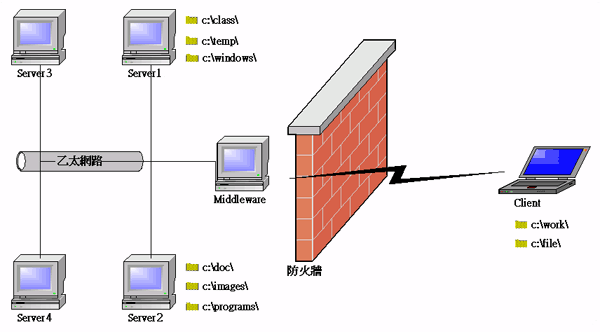

|

檔案下載與上載 (file download and
upload)
UNC 通用名稱協定 (Universal Naming
Convention)
HttpCodeBase() 和 UNCCodePath()
檔案下載 (file download)
檔案上載 (file upload)
檔案系統的應用 (file system)
jLIVE
Builder™ 提供應用系統存取網際網路的檔案資源 (file
resource)，應用程式在客戶端 (client)
執行時，可以存取檔案資源的範圍，可分為三部份：客戶端的檔案資源(client)、jLIVE™
middle ware 所在的區域網路的共享檔案資源(LAN)、網際網路資源(internet)。應用程式執行時，檔案資源的位置
(location) 指名方式及轉送者 (transmitter)
各有不同。檔案資源可以上傳下載 (download and upload)，表示檔案資源是可編輯的
(updateable)；檔案資源可以由應用程式接受者，表示可以進一步操作資料
(process data)，否則只能瀏覽 (browser)。
|
檔案資源 |
使用者端的檔案資源(Client) |
jLIVE™ middle ware 所在的區域網路的共享檔案資源(LAN) |
網際網路資源(Internet) |
| 下載/上傳 |
下載/上傳 |
下載/上傳 |
下載 |
| 資源位置 |
直接指名 (c:\\work\myfile.txt) |
UNC 通用協定 |
URL (HTTP://---) |
| 轉送者(Transmitter) |
客戶端作業系統 |
jLIVE™ middle ware |
瀏覽器 (Browser) |
| 接受者(Receiver) |
應用程式/客戶端作業系統 |
應用程式/jLIVE™ middle ware |
瀏覽器 |
| 資料應用 |
應用程式 |
應用程式 |
瀏覽器瀏覽 |
jLIVE
Builder™ 上傳下載檔案資源可以透過：元件(component)、事件(event)以及運算公式
(formula)。備忘錄元件
(Memo component)、圖片元件 (Image component)
可以自行下載檔案資源，設計師透過運算式的元件屬性設定 (SetProp())，可以將元件內含資料上傳更新。【下載文字檔到buffer資料來源】事件，可以將文字資料載入至
Buffer 資料來源中，【上傳檔案】事件則可將資料上傳更新或新增。使用運算公式不但可以上傳下載檔案資源，亦可新增
(create)、刪除 (delete)、檢查是否存在 (existed) 檔案及目錄
(directory)。
UNC (Univeral
Naming
Convention) 通用名稱協定
jLIVE
Builder™ 採取 UNC
通用名稱協定，作為網路檔案資源的定址，UNC 格式為 ：
『 \\主機名稱或IP\分享資源名稱\資源路徑名稱
』(『 \\Server Name or IP\Sharing Path\File Path and Name 』)
由於區域網路中檔案資源是由
jLIVE™ middle ware 所轉送 (transmitter)
，指定網路系統中的檔案資源時，依照 UNC
格式，必須先將檔案資源分享 (shared) 給 jLIVE™ middle ware
，否則無法存取檔案資源。
屬性設定中的
UNC
通用名稱協定，如果沒有給予主機名稱，系統將視其為存取使用者
(client)
端的檔案資源，設計師或執行期的使用者，必須給予完整的檔案路徑名稱，例如：c:\\work\myfile.txt。
UNC
範例：
-
c:\\work\myfile.txt
：存取使用者端的檔案 myfile.txt。
-
\\Server1\customer\register.txt
：存取 Server1所分享目錄
customer 下的檔案 register.txt。
-
"\\"
$ ApServerName() $ "class\doc\test.html" ：存取jLIVE™
middle ware 所分享目錄
class 下的檔案 doc\test.html。

▲Top
HttpCodeBase()
和 UNCCodePath()
jLIVE
Builder™ 提供兩個運算函式，以利於設計師定址 (addressing)
應用程式 class 碼所在的位置 (location)，當應用系統佈建執行時，不會因為
Web 、 middle ware 主機的 IP
或主機名稱更動時，須重新更改程式碼。HttpCodeBase()
通常使用於超連結 (hyperlink) 應用程式
class 目錄下的檔案資源，例如：在【執行超連結】事件的 Ref
屬性運算式中填入 HttpCodeBase()$ "doc/company.html"
，表示以瀏覽器連結『 應用程式所在主機 class/doc/company.html』。UNCCodePath()
通常使用於存取應用程式 class
目錄下的檔案資源，例如：以【下載文字檔到buffer資料來源】事件下載文字檔，屬性
檔案URL 填入
UNCCodePath() $"doc/register.txt"，表示將『
應用程式所在主機 class/doc/register.txt』載入 buffer 資料來源。
由於
jLIVE
Builder™ 完全模擬應用程式執行狀態，所以設計師在 一、jLIVE
Builder™ 設計時測試執行，二、以建立的應用程式 HTML
在本機執行，三、以瀏覽器 (browser) 透過網際網路執行(實際執行)，三種狀況下系統會自動轉換
HttpCodeBase() 及 UNCCodePath()
的結果值，以因應實際及測試狀況。
▲Top
檔案下載
(file download)
-
Load(source)
source
是UNC 指名的檔案資源，會以字串讀入，例如：Load("\\Server1\temp\readme.txt")。參閱
運算公式檔案-Load(source)。
-
CopyTo(source,
target)
將來源檔案內容
(source) 複製到所指定的目標檔案 (target) 位置，以 UNC
指名來源及目標檔案資源。例如： CopyTo( \\server\path\檔案名稱
, \\server\path\檔案名稱)。參閱運算公式檔案
CopyTo(source,
target)。
▲Top
檔案上傳
(file upload)
-
事件的應用 (event)：
-
運算式的應用 (formula)：
-
CopyTo(source,target)
將來源檔案內容
(source) 複製到所指定的目標檔案 (target) 位置，以 UNC
指名來源及目標檔案資源。例如： CopyTo( \\server\path\檔案名稱
, \\server\path\檔案名稱)。參閱運算公式檔案
CopyTo(source,
target)。
SaveAs(target,
data, append)
將字串資料
(data)
存至 (replace) 或加入 (append) 到所指定的目標檔案 (target)
位置，以 UNC 指名目標檔案資源。例如： SaveAs( \\server\path\檔案名稱
,
"Test text", 0)。參閱運算公式檔案
SaveAs(target,
data, append)。
▲Top
檔案系統應用
(file system)
-
檔案選擇器 (file chooser)：
提供使用者以檔案選擇視窗，選取檔案資源。
FileChooser(title,isfile,filter)：FileChooser(標題,是否為檔案,副檔名類型)，例如：FileChooser("Choose
Files" ,1 ,0 )
-
標題 (title)：檔案選擇系統標題。
-
目標是否為檔案 (is file or directory)：1 或 0。
-
副檔名類型
(extension filter)：全部則輸入""，其他使用字串，例如
：".txt"。FileChooser("Choose Files" ,1 ,".txt")。
-
檔案系統管理
(file system management)：
運算公式提供設計師管理使用者端
(client) 及 jLIVE™ middle ware
所在區域網路的檔案管理，包括查詢是否存在 (existed)、新增、刪除目錄
(directory) 及檔案 (file)。File(cmd, target)
，cmd 為運算公式的指令 (Command)，target
為 UNC 指名的檔案資源。
File("md", target)
建立目錄 (make
directory)。
File("rd",
target)
刪除目錄
(remove directory)。target
如果不是正確的目錄名稱，系統會回應錯誤訊息。目錄下如果仍存在檔案或目錄，該目錄無法刪除，系統會回應錯誤訊息，如果要一併刪除目錄下所有檔案及子目錄，以
"deltree" 的指令運作。
File("del",
target)
刪除檔案
(delete file)。target
如果不是正確的檔案名稱，系統會回應錯誤訊息。
File("exist",
target)
目錄或檔案是否存在
(directory or file is existed)。
File("deltree",
target)
刪除整個目錄
(delete directory) ，包含目錄下所有檔案及子目錄。
▲Top
Copyright © 2001~
2004 Probe Technology . All Rights Reserved.
Questions, comments,
and suggestions to Service@probe.com.tw
|